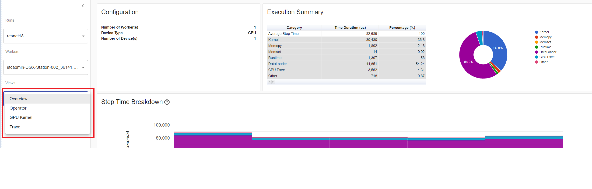
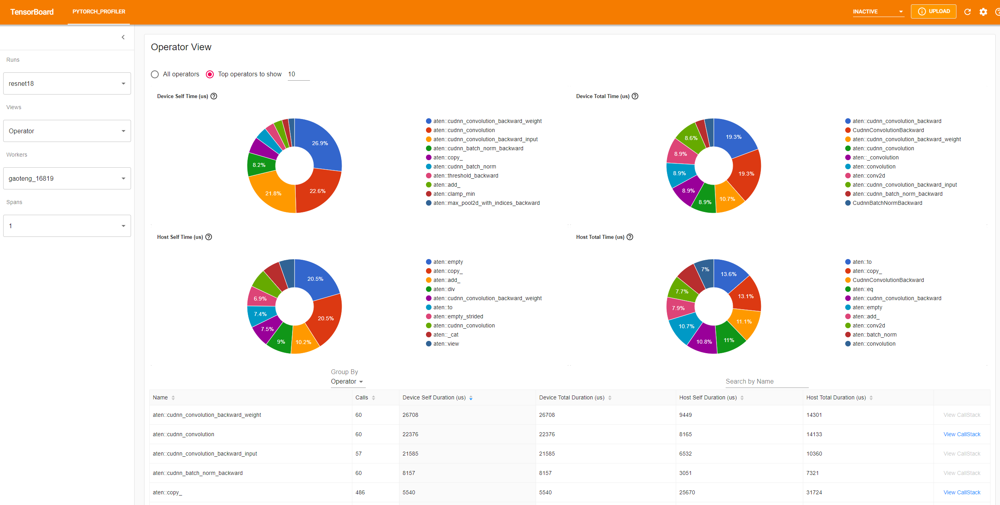
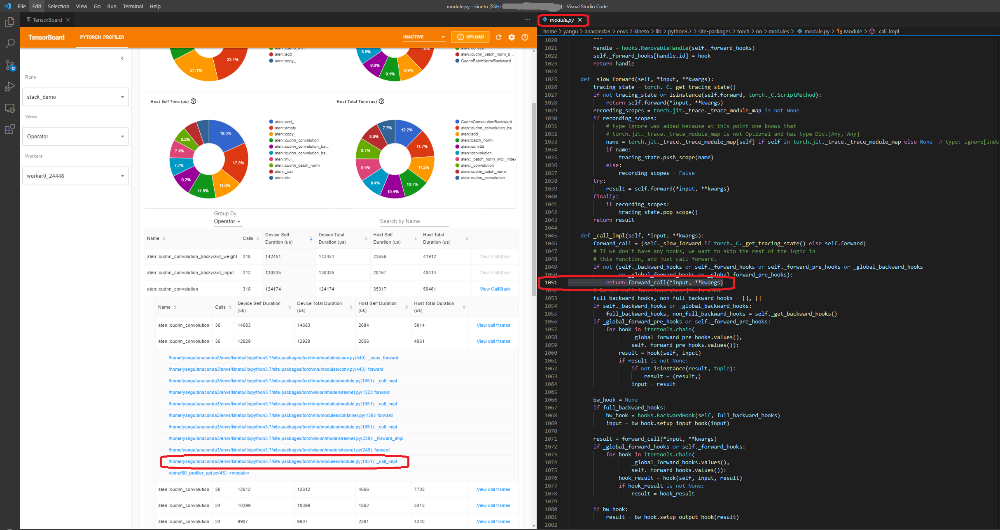
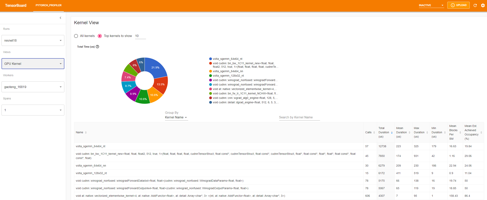
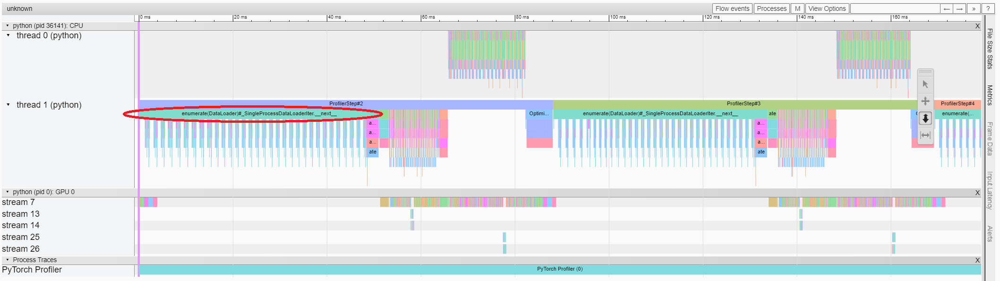
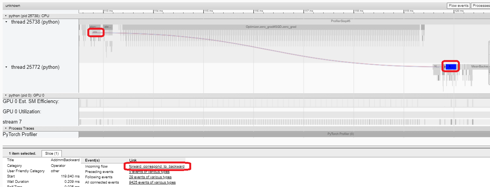
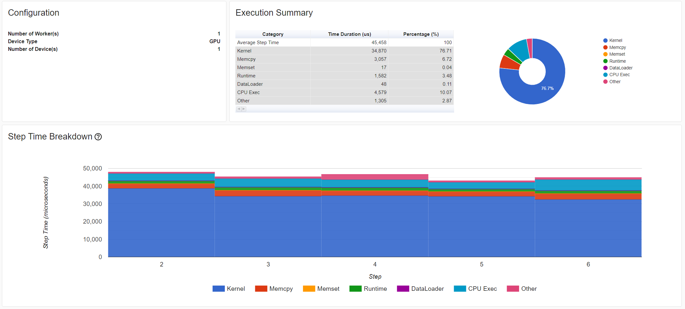
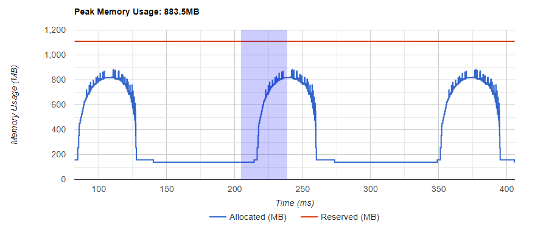
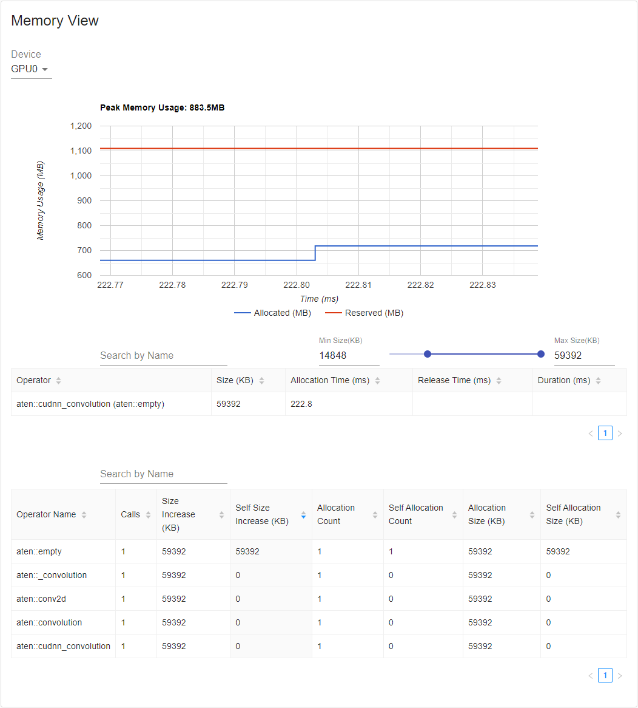
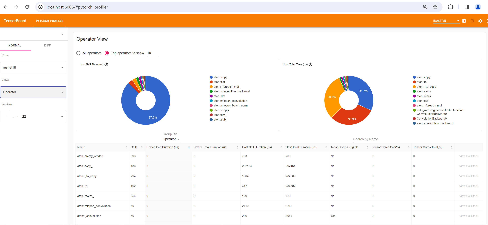

Note
Go to the end to download the full example code.
PyTorch Profiler With TensorBoard#
Created On: Apr 20, 2021 | Last Updated: Oct 31, 2024 | Last Verified: Nov 05, 2024
This tutorial demonstrates how to use TensorBoard plugin with PyTorch Profiler to detect performance bottlenecks of the model.
Warning
The TensorBoard integration with the PyTorch profiler is now
deprecated. Instead, use Perfetto or the Chrome trace to
view trace.json files. After
generating a trace,
simply drag the trace.json into Perfetto UI
or chrome://tracing to visualize your profile.
Introduction#
PyTorch 1.8 includes an updated profiler API capable of recording the CPU side operations as well as the CUDA kernel launches on the GPU side. The profiler can visualize this information in TensorBoard Plugin and provide analysis of the performance bottlenecks.
In this tutorial, we will use a simple Resnet model to demonstrate how to use TensorBoard plugin to analyze model performance.
Setup#
To install torch and torchvision use the following command:
pip install torch torchvision
Steps#
Prepare the data and model
Use profiler to record execution events
Run the profiler
Use TensorBoard to view results and analyze model performance
Improve performance with the help of profiler
Analyze performance with other advanced features
Additional Practices: Profiling PyTorch on AMD GPUs
1. Prepare the data and model#
First, import all necessary libraries:
import torch
import torch.nn
import torch.optim
import torch.profiler
import torch.utils.data
import torchvision.datasets
import torchvision.models
import torchvision.transforms as T
Then prepare the input data. For this tutorial, we use the CIFAR10 dataset.
Transform it to the desired format and use DataLoader to load each batch.
transform = T.Compose(
[T.Resize(224),
T.ToTensor(),
T.Normalize((0.5, 0.5, 0.5), (0.5, 0.5, 0.5))])
train_set = torchvision.datasets.CIFAR10(root='./data', train=True, download=True, transform=transform)
train_loader = torch.utils.data.DataLoader(train_set, batch_size=32, shuffle=True)
Next, create Resnet model, loss function, and optimizer objects. To run on GPU, move model and loss to GPU device.
device = torch.device("cuda:0")
model = torchvision.models.resnet18(weights='IMAGENET1K_V1').cuda(device)
criterion = torch.nn.CrossEntropyLoss().cuda(device)
optimizer = torch.optim.SGD(model.parameters(), lr=0.001, momentum=0.9)
model.train()
Define the training step for each batch of input data.
def train(data):
inputs, labels = data[0].to(device=device), data[1].to(device=device)
outputs = model(inputs)
loss = criterion(outputs, labels)
optimizer.zero_grad()
loss.backward()
optimizer.step()
2. Use profiler to record execution events#
The profiler is enabled through the context manager and accepts several parameters, some of the most useful are:
schedule- callable that takes step (int) as a single parameter and returns the profiler action to perform at each step.In this example with
wait=1, warmup=1, active=3, repeat=1, profiler will skip the first step/iteration, start warming up on the second, record the following three iterations, after which the trace will become available and on_trace_ready (when set) is called. In total, the cycle repeats once. Each cycle is called a “span” in TensorBoard plugin.During
waitsteps, the profiler is disabled. Duringwarmupsteps, the profiler starts tracing but the results are discarded. This is for reducing the profiling overhead. The overhead at the beginning of profiling is high and easy to bring skew to the profiling result. Duringactivesteps, the profiler works and records events.on_trace_ready- callable that is called at the end of each cycle; In this example we usetorch.profiler.tensorboard_trace_handlerto generate result files for TensorBoard. After profiling, result files will be saved into the./log/resnet18directory. Specify this directory as alogdirparameter to analyze profile in TensorBoard.record_shapes- whether to record shapes of the operator inputs.profile_memory- Track tensor memory allocation/deallocation. Note, for old version of pytorch with version before 1.10, if you suffer long profiling time, please disable it or upgrade to new version.with_stack- Record source information (file and line number) for the ops. If the TensorBoard is launched in VS Code (reference), clicking a stack frame will navigate to the specific code line.
with torch.profiler.profile(
schedule=torch.profiler.schedule(wait=1, warmup=1, active=3, repeat=1),
on_trace_ready=torch.profiler.tensorboard_trace_handler('./log/resnet18'),
record_shapes=True,
profile_memory=True,
with_stack=True
) as prof:
for step, batch_data in enumerate(train_loader):
prof.step() # Need to call this at each step to notify profiler of steps' boundary.
if step >= 1 + 1 + 3:
break
train(batch_data)
Alternatively, the following non-context manager start/stop is supported as well.
prof = torch.profiler.profile(
schedule=torch.profiler.schedule(wait=1, warmup=1, active=3, repeat=1),
on_trace_ready=torch.profiler.tensorboard_trace_handler('./log/resnet18'),
record_shapes=True,
with_stack=True)
prof.start()
for step, batch_data in enumerate(train_loader):
prof.step()
if step >= 1 + 1 + 3:
break
train(batch_data)
prof.stop()
3. Run the profiler#
Run the above code. The profiling result will be saved under ./log/resnet18 directory.
4. Use TensorBoard to view results and analyze model performance#
Note
TensorBoard Plugin support has been deprecated, so some of these functions may not work as previously. Please take a look at the replacement, HTA.
Install PyTorch Profiler TensorBoard Plugin.
pip install torch_tb_profiler
Launch the TensorBoard.
tensorboard --logdir=./log
Open the TensorBoard profile URL in Google Chrome browser or Microsoft Edge browser (Safari is not supported).
http://localhost:6006/#pytorch_profiler
You could see Profiler plugin page as shown below.
Overview
The overview shows a high-level summary of model performance.
The “GPU Summary” panel shows the GPU configuration, GPU usage and Tensor Cores usage. In this example, the GPU Utilization is low. The details of these metrics are here.
The “Step Time Breakdown” shows distribution of time spent in each step over different categories of execution.
In this example, you can see the DataLoader overhead is significant.
The bottom “Performance Recommendation” uses the profiling data to automatically highlight likely bottlenecks, and gives you actionable optimization suggestions.
You can change the view page in left “Views” dropdown list.
Operator view
The operator view displays the performance of every PyTorch operator that is executed either on the host or device.
The “Self” duration does not include its child operators’ time. The “Total” duration includes its child operators’ time.
View call stack
Click the View Callstack of an operator, the operators with same name but different call stacks will be shown.
Then click a View Callstack in this sub-table, the call stack frames will be shown.
If the TensorBoard is launched inside VS Code (Launch Guide), clicking a call stack frame will navigate to the specific code line.
Kernel view
The GPU kernel view shows all kernels’ time spent on GPU.
Tensor Cores Used: Whether this kernel uses Tensor Cores.
Mean Blocks per SM: Blocks per SM = Blocks of this kernel / SM number of this GPU. If this number is less than 1, it indicates the GPU multiprocessors are not fully utilized. “Mean Blocks per SM” is weighted average of all runs of this kernel name, using each run’s duration as weight.
Mean Est. Achieved Occupancy: Est. Achieved Occupancy is defined in this column’s tooltip. For most cases such as memory bandwidth bounded kernels, the higher the better. “Mean Est. Achieved Occupancy” is weighted average of all runs of this kernel name, using each run’s duration as weight.
Trace view
The trace view shows timeline of profiled operators and GPU kernels. You can select it to see details as below.
You can move the graph and zoom in/out with the help of right side toolbar. And keyboard can also be used to zoom and move around inside the timeline. The ‘w’ and ‘s’ keys zoom in centered around the mouse, and the ‘a’ and ‘d’ keys move the timeline left and right. You can hit these keys multiple times until you see a readable representation.
If a backward operator’s “Incoming Flow” field is with value “forward correspond to backward”, you can click the text to get its launching forward operator.
In this example, we can see the event prefixed with enumerate(DataLoader) costs a lot of time.
And during most of this period, the GPU is idle.
Because this function is loading data and transforming data on host side,
during which the GPU resource is wasted.
5. Improve performance with the help of profiler#
At the bottom of “Overview” page, the suggestion in “Performance Recommendation” hints the bottleneck is DataLoader.
The PyTorch DataLoader uses single process by default.
User could enable multi-process data loading by setting the parameter num_workers.
Here is more details.
In this example, we follow the “Performance Recommendation” and set num_workers as below,
pass a different name such as ./log/resnet18_4workers to tensorboard_trace_handler, and run it again.
train_loader = torch.utils.data.DataLoader(train_set, batch_size=32, shuffle=True, num_workers=4)
Then let’s choose the recently profiled run in left “Runs” dropdown list.
From the above view, we can find the step time is reduced to about 76ms comparing with previous run’s 132ms,
and the time reduction of DataLoader mainly contributes.
From the above view, we can see that the runtime of enumerate(DataLoader) is reduced,
and the GPU utilization is increased.
6. Analyze performance with other advanced features#
Memory view
To profile memory, profile_memory must be set to True in arguments of torch.profiler.profile.
You can try it by using existing example on Azure
pip install azure-storage-blob
tensorboard --logdir=https://torchtbprofiler.blob.core.windows.net/torchtbprofiler/demo/memory_demo_1_10
The profiler records all memory allocation/release events and allocator’s internal state during profiling. The memory view consists of three components as shown in the following.

The components are memory curve graph, memory events table and memory statistics table, from top to bottom, respectively.
The memory type could be selected in “Device” selection box. For example, “GPU0” means the following table only shows each operator’s memory usage on GPU 0, not including CPU or other GPUs.
The memory curve shows the trends of memory consumption. The “Allocated” curve shows the total memory that is actually in use, e.g., tensors. In PyTorch, caching mechanism is employed in CUDA allocator and some other allocators. The “Reserved” curve shows the total memory that is reserved by the allocator. You can left click and drag on the graph to select events in the desired range:
After selection, the three components will be updated for the restricted time range, so that you can gain more information about it. By repeating this process, you can zoom into a very fine-grained detail. Right click on the graph will reset the graph to the initial state.
In the memory events table, the allocation and release events are paired into one entry. The “operator” column shows
the immediate ATen operator that is causing the allocation. Notice that in PyTorch, ATen operators commonly use
aten::empty to allocate memory. For example, aten::ones is implemented as aten::empty followed by an
aten::fill_. Solely display the operator name as aten::empty is of little help. It will be shown as
aten::ones (aten::empty) in this special case. The “Allocation Time”, “Release Time” and “Duration”
columns’ data might be missing if the event occurs outside of the time range.
In the memory statistics table, the “Size Increase” column sums up all allocation size and minus all the memory release size, that is, the net increase of memory usage after this operator. The “Self Size Increase” column is similar to “Size Increase”, but it does not count children operators’ allocation. With regards to ATen operators’ implementation detail, some operators might call other operators, so memory allocations can happen at any level of the call stack. That says, “Self Size Increase” only count the memory usage increase at current level of call stack. Finally, the “Allocation Size” column sums up all allocation without considering the memory release.
Distributed view
The plugin now supports distributed view on profiling DDP with NCCL/GLOO as backend.
You can try it by using existing example on Azure:
pip install azure-storage-blob
tensorboard --logdir=https://torchtbprofiler.blob.core.windows.net/torchtbprofiler/demo/distributed_bert
The “Computation/Communication Overview” shows computation/communication ratio and their overlapping degree. From this view, User can figure out load balance issue among workers. For example, if the computation + overlapping time of one worker is much larger than others, there may be a problem of load balance or this worker may be a straggler.
The “Synchronizing/Communication Overview” shows the efficiency of communication. “Data Transfer Time” is the time for actual data exchanging. “Synchronizing Time” is the time for waiting and synchronizing with other workers.
If one worker’s “Synchronizing Time” is much shorter than that of other workers’, this worker may be a straggler which may have more computation workload than other workers’.
The “Communication Operations Stats” summarizes the detailed statistics of all communication ops in each worker.
7. Additional Practices: Profiling PyTorch on AMD GPUs#
The AMD ROCm Platform is an open-source software stack designed for GPU computation, consisting of drivers, development tools, and APIs. We can run the above mentioned steps on AMD GPUs. In this section, we will use Docker to install the ROCm base development image before installing PyTorch.
For the purpose of example, let’s create a directory called profiler_tutorial, and save the code in Step 1 as test_cifar10.py in this directory.
mkdir ~/profiler_tutorial
cd profiler_tutorial
vi test_cifar10.py
At the time of this writing, the Stable(2.1.1) Linux version of PyTorch on ROCm Platform is ROCm 5.6.
Obtain a base Docker image with the correct user-space ROCm version installed from Docker Hub.
It is rocm/dev-ubuntu-20.04:5.6.
Start the ROCm base Docker container:
docker run -it --network=host --device=/dev/kfd --device=/dev/dri --group-add=video --ipc=host --cap-add=SYS_PTRACE --security-opt seccomp=unconfined --shm-size 8G -v ~/profiler_tutorial:/profiler_tutorial rocm/dev-ubuntu-20.04:5.6
Inside the container, install any dependencies needed for installing the wheels package.
sudo apt update
sudo apt install libjpeg-dev python3-dev -y
pip3 install wheel setuptools
sudo apt install python-is-python3
Install the wheels:
pip3 install torch torchvision torchaudio --index-url https://download.pytorch.org/whl/rocm5.6
Install the
torch_tb_profiler, and then, run the Python filetest_cifar10.py:
pip install torch_tb_profiler
cd /profiler_tutorial
python test_cifar10.py
Now, we have all the data needed to view in TensorBoard:
tensorboard --logdir=./log
Choose different views as described in Step 4. For example, below is the Operator View:
At the time this section is written, Trace view does not work and it displays nothing. You can work around by typing chrome://tracing in your Chrome Browser.
Copy the
trace.jsonfile under~/profiler_tutorial/log/resnet18directory to the Windows.
You may need to copy the file by using scp if the file is located in a remote location.
Click Load button to load the trace JSON file from the
chrome://tracingpage in the browser.
As mentioned previously, you can move the graph and zoom in and out.
You can also use keyboard to zoom and move around inside the timeline.
The w and s keys zoom in centered around the mouse,
and the a and d keys move the timeline left and right.
You can hit these keys multiple times until you see a readable representation.
Learn More#
Take a look at the following documents to continue your learning, and feel free to open an issue here.

{kind=link}
{kind=link}
{kind=link}
{kind=link}
{kind=link}
{kind=link}
{kind=link}
{kind=link}
{kind=link}
{kind=link}
{kind=link}
{kind=link}
{kind=link}
{kind=link}